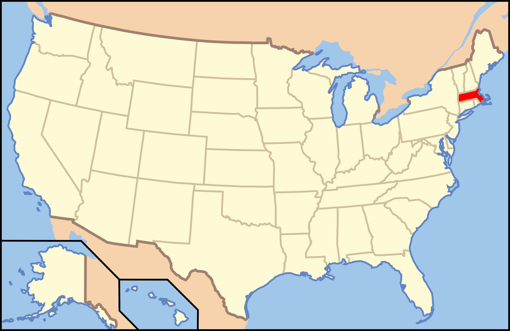

Massachusetts

1. Gates Pond - Berlin

dee & tula monstah/Flickr
| Grade: Short |
|---|
| More Images |
| Trail Link |
2. The Great Blue Hill - Milton

Monique Monopoli/Alltrails
| Grade: Short |
|---|
| More Images |
| Trail Link |